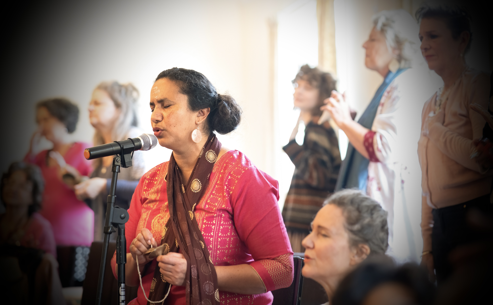

Sally Jamila is in ongoing collaboration with other artists, creating a diverse catalogue of sacred works including song, chant, soundscape with recitation, and instrumental compositions. Drawing on a wide range of disciplines and media, her practice explores the inherent sacredness of perception, feeling, and embodied experience through the arts.

For decades I have been a chanter, musician and composer within the community of Adidam. This is a collection of original chants and songs used within that setting and dedicated in honour of my relationship with Adi Da Samraj. They may be of most interest to other practitioners of Adidam, however they are not limited to their use.
These Sacred Offerings have been composed and recorded for celebrations, events and occasions within the yearly sacred cycle of Commemorative Celebrations within Adidam. Many of these recordings are collaborations and collective offerings from the various sacred guilds within Adidam. To access these recordings for download, a small paywall has been created to help provide the patronage required to support this continuing process and for helping to create a cannon of sacred works.